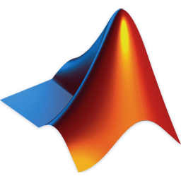
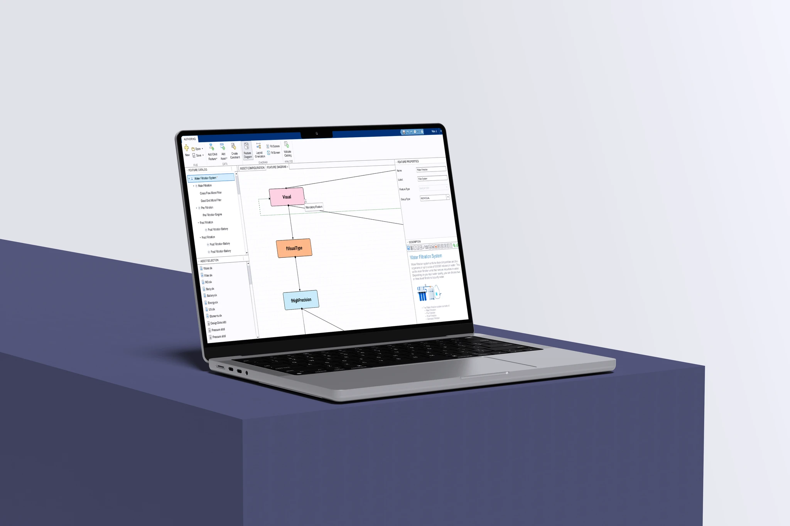
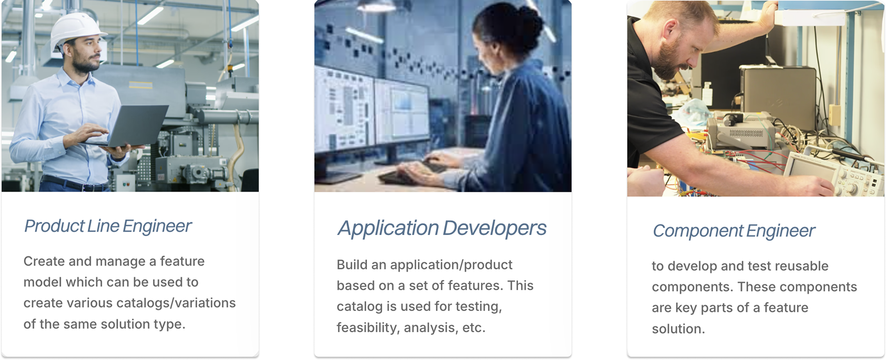

Designing 3D modeling tools for engineers at Bosch, Hyundai, and Cummins.

How might we make feature modeling intuitive for engineers who live in MATLAB all day?
MathWorks' Simulink is one of the leading platforms for system modeling and simulation. Engineers at automotive, aerospace, and industrial companies use it to build and test complex systems.
As Senior UX Designer, I led the 0-to-1 design of a new class of Feature Modeling applications inside Simulink. The goal was to let engineers define and manage product lines (collections of possible features, parameters, assets, and constraints).
The existing tools were built for experts. Everyone else was drowning.
Engineers at Bosch, Hyundai, and Cummins were doing something genuinely hard: managing complex product lines with hundreds of features, parameters, and interdependencies. The existing UML and modeling tools in the market made that harder due to their complexity and lack of customization.
Current software pain points include:
- Cluttered interfaces where data was hard to read and even harder to act on. Engineers spent more time deciphering the UI than making engineering decisions.
- Rigid workflows that assumed a single "correct" process. Real engineering is iterative and nonlinear the current tools did not account for that.
- No customization. Different teams at the same company had fundamentally different needs, but had no way to adapt the tools to fit them.
- Steep learning curves. Onboarding a new engineer to the existing workflows required manual review of documentation.
These are highly technical users with deep domain expertise. The design challenge wasn't to dumb things down it was to remove the friction that was getting between them and their actual work. A cluttered UI doesn't make you smarter, it just makes you slower.
Systems engineers who build cars, aircraft, and industrial machinery.
Before designing anything, I needed to understand how these engineers actually worked not how the product team imagined they worked. I ran user interviews and contextual inquiries with engineers at key MathWorks customers to map real workflows and capture the gaps between what the tools offered and what people actually needed.

User personas revealed systems engineers at automotive companies with fundamentally different modeling needs Research synthesis included mapping pain points, workflow patterns, and opportunity areas across user segments
Research synthesis included mapping pain points, workflow patterns, and opportunity areas across user segments
Every interview surfaced the same underlying frustration: engineers knew exactly what they needed to accomplish, but the tools kept getting in the way. The research validated the opportunity clearly, 100% of interviewed engineers wanted better feature selection tools.
Cross-functional workshops, iterative prototypes, and one surprising A/B test result.
This was a 0-to-1 project, which meant there was no existing design to iterate on and no established patterns to follow. I started with structured discovery and stayed close to engineers throughout the entire process.
Discovery & Kickoff
I ran a kickoff session with PMs, engineers, and key stakeholders to align on scope and opportunity space before any design work began. Getting everyone's mental models into the open early saved us from painful misalignment later.
Cross-Functional Sketching Workshops
I facilitated sketching sessions in Miro with engineers, PMs, and domain experts using dot-voting and affinity mapping to converge on feature priorities. Getting engineers (not just designers) sketching interfaces surfaced constraints and opportunities that wouldn't have come up any other way.
 Miro sketching workshop of engineers and designers working side-by-side to map feature priorities and interface concepts
Miro sketching workshop of engineers and designers working side-by-side to map feature priorities and interface concepts
Iterative Design & Engineering Collaboration
I reviewed designs iteratively with PMs and engineers throughout development. This wasn't a handoff it was a continuous back-and-forth. We refined the toolstrip navigation, multi-panel workspace layout, customizable catalogs, and hierarchical data views across multiple rounds before anything was considered stable.
 Iterative design reviews to tailor the toolstrip navigation, workspace layouts, and data hierarchy
Iterative design reviews to tailor the toolstrip navigation, workspace layouts, and data hierarchy
A/B Testing: Minimalist vs. Data-Rich
We ran A/B tests comparing a minimalist UI approach against a data-rich interface. The result was clear and somewhat counterintuitive: engineers overwhelmingly preferred the data-rich version. These users wanted more information visible at once, the minimalist approach felt like it was hiding things they needed. We also tested different labeling strategies; clearer, more explicit labels won every time.
 A/B test results refelcted in refined user flows; data-rich interfaces outperformed minimalist ones for this user group; explicit labels reduced errors significantly
A/B test results refelcted in refined user flows; data-rich interfaces outperformed minimalist ones for this user group; explicit labels reduced errors significantly
Feature Modeling Apps: a workspace for managing product lines in Simulink.
The final design is a multi-panel workspace with a structured toolstrip, customizable catalogs, and hierarchical data views giving engineers visibility and control without overwhelming them. Every component reflects something a user asked for directly.
 Feature Modeling App landing page includes toolstrip navigation, multi-panel workspace, customizable catalog on the left, and hierarchical data view on the right
Feature Modeling App landing page includes toolstrip navigation, multi-panel workspace, customizable catalog on the left, and hierarchical data view on the right
 Prototype walkthrough of feature selection workflow, model configuration, and constraint management in a single workflow
Prototype walkthrough of feature selection workflow, model configuration, and constraint management in a single workflow
 The shipped product deployed to key customers including Bosch, Hyundai, and Cummins
The shipped product deployed to key customers including Bosch, Hyundai, and Cummins
Shipped to key customers.
The Feature Modeling Apps shipped to MathWorks' key enterprise customers. Post-launch surveys and workflow analysis validated both the usability improvements and the efficiency gains.
Engineers at Bosch, Hyundai, and Cummins reported that the new tools reduced the time spent on feature selection workflows and made model configuration significantly less error-prone. The 20% reduction in computation time came directly from engineers spending less time fighting the interface and more time making good engineering decisions.
What I learned
Don't design for the average user when your users are experts.
Every instinct in UX pushes toward simplification. For most products, that's right. For expert tools, simplifying the wrong things creates friction by hiding information that power users need to see and abstracting controls that engineers want direct access to. The A/B test confirmed this: our most sophisticated users wanted more visibility, not less.
Get engineers sketching. It changes the conversation.
Facilitated sketching workshops with cross-functional teams surfaced constraints and possibilities that wouldn't have appeared in any interview or design review. When an engineer draws their ideal interface, they reveal mental models you can't reach through questions alone.
0-to-1 design requires more alignment work upfront, not less.
When there's no existing product to anchor discussions, every stakeholder has a different vision in their head. The kickoff session and early research were the most curcial part of the process. Getting alignment before the first frame was drawn meant every subsequent decision had a foundation.